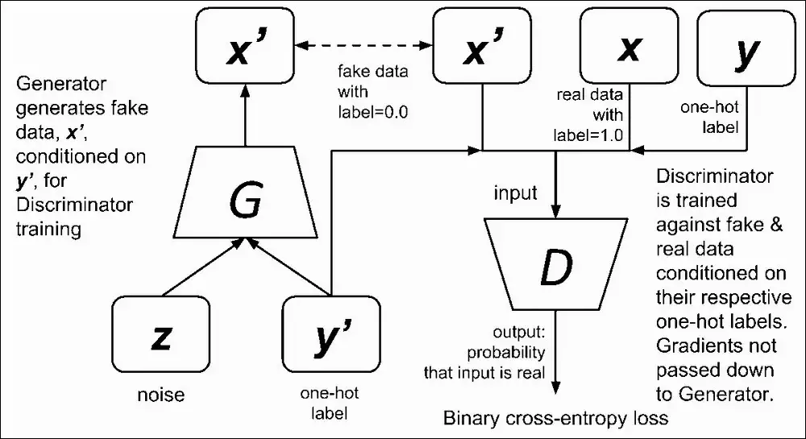
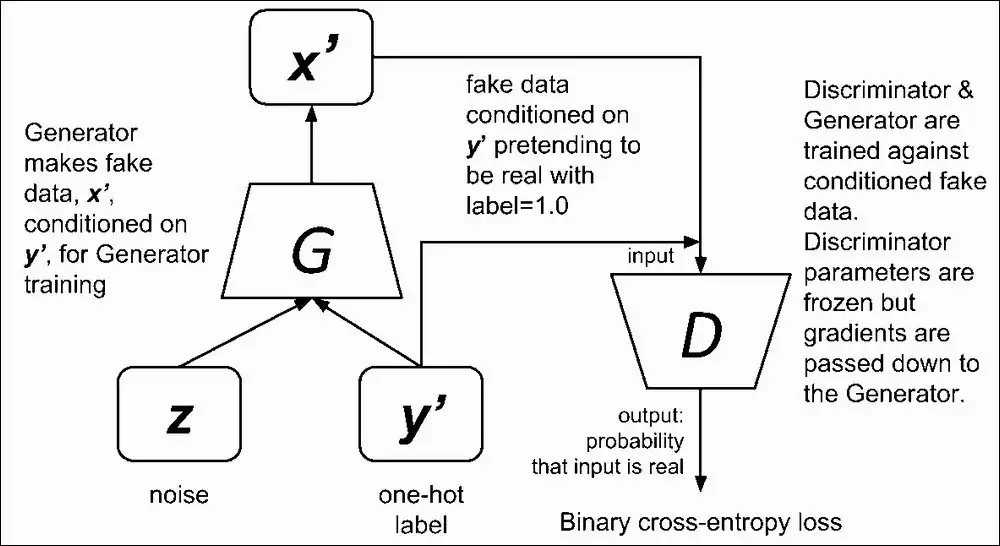

Conditional GAN¶
- Image2Image, Face Aging, Text to Image
- Generate images with certain extra conditions or attributes
- The Generator and Discriminator both receive some additional conditioning input information. This could be the class of the current image or some other property.
- add an additional input layer with values of one-hot-encoded image labels
- Adding a vector of features controls the output and guide Generator figure out what to do.
- Such a vector of features should derive from a image which encode the class(like an image of a woman or a man if we are trying to create faces of imaginary actors) or a set of specific characteristics we expect from the image (in case of imaginary actors, it could be the type of hair, eyes or complexion).
- Whereas conditional generation uses labels during training, controllable generation focuses on controlling the features that you want in the output examples.
- We can incorporate the information into the images that will be learned and also into the Z input, which is not completely random anymore.
- This can be done by adjusting the input noise vector z that is fed into the generator after it has been trained.
- We can use the same DCGANs and imposed a condition on both Generator’s and Discriminator’s inputs. The condition should be in the form of a one-hot vector version of the digit. This is associated with the image to Generator or Discriminator as real or fake.
- Typically this is done with a one-hot vector, meaning there are zeros in every position except for the position of the class we want to generate
Architecture¶
The Discriminator’s network¶
- Discriminator’s evaluation is done not only on the similarity between fake data and original data but also on the correspondence of the fake data image to its input label (or features)
- Same as DCGAN except one hot vector for conditioning
The Generator’s network¶
- To create an image that looks as “real” as possible to fool the Discriminator.
- Same as DCGAN except one hot vector.

Loss functions¶
- We need to calculate two losses for the Discriminator. The sum of the “fake” image and “real” image loss is the overall Discriminator loss. So the loss function of the Discriminator is aiming at minimizing the error of predicting real images coming from the dataset and fake images coming from the Generator given their one-hot labels.
Gen¶
- The loss function of the Generator minimizes the correct prediction of the Discriminator on fake images conditioned on the specified one-hot labels.
-
\[\mathcal{L}^{(G)}(\theta^{(G)}, \theta^{(D)}) = - \mathbb{E}_{z} log \mathcal{D} (\mathcal{G} (z|y’))\]
Disc¶
- has to correctly label real images which are coming from training data set as real.
- has to correctly label generated images which are coming from Generator as fake.
-
\[ \mathcal{L}^{(D)}(\theta^{(G)}, \theta^{(D)})= - \mathbb{E}_{x \sim p_{data}}log \mathcal{D}(x|y) - \mathbb{E}_{z} log (1- \mathcal{D}(\mathcal{G}(z|y')))\]
Training¶
- The Discriminator is trained using real and fake data and generated
- After the Discriminator has been trained, both models are trained together.
- First, the Generator creates some new examples.
- The Discriminator’s weights are frozen, but its gradients are used in the Generator model so that the Generator can update its weights.
Training Flow¶
- For the Disc

- For the Gen

Challenges with Conditional generation¶
- Not strictly unsupervised. Needs labels
- With a conditional GAN, you get a random example from the class you specify
- With conditional generation, you have to train the GAN with labeled datasets.
- Feature Correlationa
- Z-Space Entanglement
- Classifier Gradients
DCGAN vs CGAN¶
| DCGAN | CGAN |
|---|---|
| Output features are not controllable | Output features can be controlled |
| Unsupervised | Semi-Supervised |
| Discriminator does not receive labels | Discriminator requires labels |
| Discriminator evaluates similarity between input and target images | Discriminator considers input and target images and their respective labels |